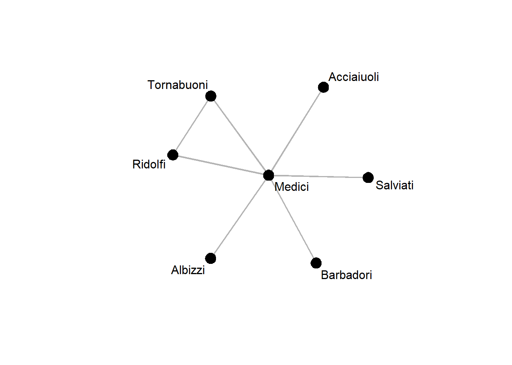
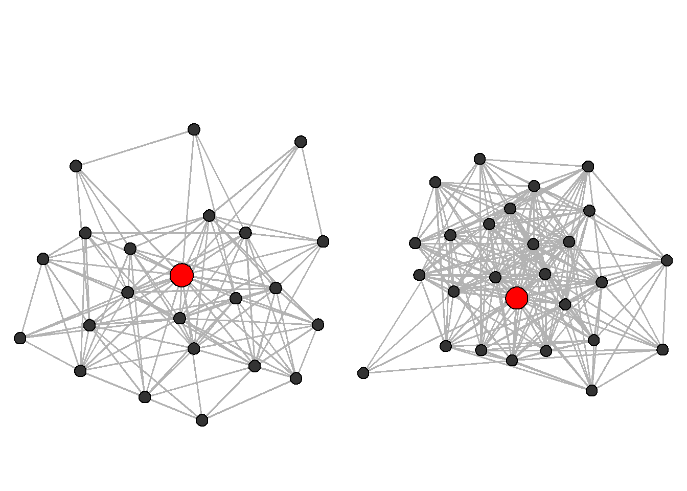

library(statnet)
data(florentine)Structural Holes and Ego-networks
In the operationalization of his structural hole theory, Ron Burt (1992) devised a set of measures that quantify the degree to which an actor can access distinct resources through their contacts. In the following, we will explore these measures in the context of the Florentine families’ marriage network, which we is contained in the statnet suite:
The structural hole measures are not included in either statnet or igraph, but they are not that hard to implement, so we will implement our own as we go.
Extract ego-networks
Burt’s structural hole measures operate on ego-networks, i.e., they only take the direct neighborhood of a node into account. Since we have a full network here, the first thing we need is a way to extract a specified node’s ego-network. Helpfully, statnet provides the function ego.extract(...), which does exactly that:
ego_medici <- ego.extract(flomarriage, ego = 9)
ego_medici$Medici
Medici Acciaiuoli Albizzi Barbadori Ridolfi Salviati Tornabuoni
Medici 0 1 1 1 1 1 1
Acciaiuoli 1 0 0 0 0 0 0
Albizzi 1 0 0 0 0 0 0
Barbadori 1 0 0 0 0 0 0
Ridolfi 1 0 0 0 0 0 1
Salviati 1 0 0 0 0 0 0
Tornabuoni 1 0 0 0 1 0 0We see that the output of ego.extract is the adjacency matrix of the ego-network, wrapped in a named list, from which we can extract its sole element with $Medici or with double square braces and a string index ([["Medici"]]). From this adjacency matrix, we can then easily reconstruct a network object:
ego_medici <- network(ego_medici[["Medici"]], directed=FALSE)Looking at the Medici’s ego-network, we can see that only a single pair of their alteri is connected:
gplot(ego_medici, gmode = "graph",
label = ego_medici %v% "vertex.names",
vertex.col = "black", edge.col = "grey70")
Effective size and efficiency
We are now ready to compute the measures. The effective size reduces the size of the ego-network \(n\) (i.e, the number of alteri) by the average degree of the alteri among each other:
\[n - \frac{2t}{n}\]
Here, \(t\) is the number of edges among the alteri, which we multiply by two because each edge contributes to the degree of two actors.
To compute this in R, we write a function called egonet_effsize(...) which takes in an ego-network and returns the above number.
Effective size implementation
egonet_effsize <- function(egonet) {
n <- network.size(egonet) - 1
t <- network.edgecount(egonet) - n
return(n - 2 * t / n)
}Let’s call it on the Medici ego-network extracted before:
egonet_effsize(ego_medici)[1] 5.666667As we can see, the Medici’s degree of 6 got reduced slightly due to the one marriage tie among their alteri.
A related quantity is the efficiency, which is just the ego-network’s size divided by its effective size. We can easily implement it using the definition of effective size above:
Efficiency implementation
egonet_efficiency <- function(egonet){
size <- network.size(egonet) - 1
effsize <- egonet_effsize(egonet)
return(effsize/size)
}We can again call our new efficiency function on the Medici ego-network:
egonet_efficiency(ego_medici)[1] 0.9444444This value is close to one because there is very littly redundancy in the ego-network, i.e., the Medici have ties to other families which are largely disconnected from each other
Network constraint
The network constraint is slightly more involved but is also designed to measure the degree to which a node’s network is constrained by redundancy, i.e., strong cohesion of their alteri.
It is formally defined as the sum of dyadic constraints \(c_{ij}\) over all neighbors of node \(i\), \(N(i)\):
\[ \sum_{j \in N(i)}c_{ij} \]
The dyadic constraint is in turn defined as the degree to which ego (i.e., node \(i\)) is invested into an alter \(j\) that the other alteri are also heavily invested in and is given by:
\[ c_{ij} = \left(p_{ij} + \sum_{q \in N(i) - j} p_{iq} p_{qj} \right)^2, \]
where \(p_{ij}\) is the investment of ego \(i\) in alter \(j\) and is defined in terms of the elements of the adjacency matrix, \(a\):
\[ p_{ij} = \frac{a_{ij} + a_{ji}}{\sum_j (a_{ij} + a_{ji})} \]
By default the constraint has no simple bounds (e.g., 0 and 1) and so we have to contend ourselves with the notion that higher constraint indicates more redundancy in an ego-network and thus a decrease in social capital.
Node level constraint is the sum of the dyadic constraint for each of ego’s alters. We here provide an implementation of both:
Constraint
dyadic_constraint <- function(egonet, alter) {
pij <- egonet[1, alter] / sum(egonet[1,])
pqj <- egonet[alter,-1] / sum(egonet[alter,])
pqj[is.nan(pqj)] <- 0
return((pij + sum(pij * pqj))^2)
}
egonet_constraint <- function(egonet) {
alteri <- 2:network.size(egonet)
dc <- sapply(alteri, function(a) dyadic_constraint(egonet, a))
return(sum(dc))
}We can now compare the degree to which the Medici’s social capital is constrained by, e.g., the Ridolfi (node 5) compared to the Albizzi (node 3):
dyadic_constraint(ego_medici, 5)[1] 0.0625dyadic_constraint(ego_medici, 3)[1] 0.02777778Similarly, we can compute the overall constraint:
egonet_constraint(ego_medici)[1] 0.2361111Apply a measure to all ego-networks
So far, we have only computed the structural hole measures for a single ego-network. Usually, we want to compare nodes on these measures, e.g., because we expect that constraint makes a difference for other node-level outcomes.
To automate the process of extracting ego-networks and applying a function to them, we here provide the apply_egonet(...) function, wich takes a network and a function to compute a statistic of interest on each extracted ego-network as arguments.
Apply to network
apply_egonet <- function(net, FUN) {
if (is.directed(net)) stop("Not implemented for directed graphs.")
egonets <- lapply(ego.extract(net), FUN = network, directed = FALSE)
return(sapply(egonets, FUN))
}Because the structural hole measures are not all stringently defined for isolated nodes, we first remove them from the network:
isol <- isolates(flomarriage)
noisol <- seq(network.size(flomarriage))[-isol]
flomarriage_noisol <- flomarriage %s% noisol Now we can compute the constraint for each ego-network using apply_egonet as follows:
apply_egonet(flomarriage_noisol, egonet_constraint) Acciaiuoli Albizzi Barbadori Bischeri Castellani Ginori
1.0000000 0.3333333 0.5000000 0.6111111 0.6111111 1.0000000
Guadagni Lamberteschi Medici Pazzi Peruzzi Ridolfi
0.2500000 1.0000000 0.2361111 1.0000000 0.8086420 0.6111111
Salviati Strozzi Tornabuoni
0.5000000 0.5173611 0.6111111 We can see that the Medici have the lowest constraints of all the Florentine families.
Exercises
- Load the Lazega advice network into an
Rsession.
Solution
adjmat <- read.table("data/lazega_advice.csv",
sep =";",
header = TRUE,
row.names = 1,
check.names = FALSE)
adjmat <- as.matrix(adjmat)
net_advice <- network(adjmat)- Symmetrize the network, using the weak rule.
Solution
net_sym <- network(symmetrize(net_advice), directed=FALSE)- Extract the ego-networks for node 40 and node 33.
Solution
e1 <- network(ego.extract(net_sym, ego=33)[["33"]], directed=FALSE)
e2 <- network(ego.extract(net_sym, ego=40)[["40"]], directed=FALSE)- Plot the two ego-networks side by side. Color the ego node differently than the alteri and increase its size.
Solution
par(mfrow = c(1,2), mar=c(0,0,3,0))
gplot(e1,
gmode = "graph",
vertex.col = c("red", rep("grey20", network.size(e1) - 1)),
vertex.cex = c(2, rep(1, network.size(e1) - 1)),
edge.col = "grey70")
gplot(e2,
gmode = "graph",
vertex.col = c("red", rep("grey20", network.size(e2) - 1)),
vertex.cex = c(2, rep(1, network.size(e2) - 1)),
edge.col = "grey70")
- Compute the degree centrality, effective size, and efficiency for the two nodes. What do you observe?
Solution
degree(e1)[1][1] 44Solution
degree(e2)[1][1] 52Solution
egonet_effsize(e1)[1] 13.63636Solution
egonet_effsize(e2)[1] 11.61538Solution
egonet_efficiency(e1)[1] 0.6198347Solution
egonet_efficiency(e2)[1] 0.4467456- Compute the degree, constraint, effective size, and efficiency for all nodes in the network.
Solution
degree <- degree(net_sym)
constraint <- apply_egonet(net_sym, egonet_constraint)
effsize <- apply_egonet(net_sym, egonet_effsize)
efficiency <- apply_egonet(net_sym, egonet_efficiency)- Create a pairs plot (see session on centrality) of the structural hole measures and degree centrality. What do you observe?
source("helpers/pairsplot.R") # load helper script to improve the plot
measures <- cbind(degree, constraint, effsize, efficiency)
pairs(measures,
upper.panel = panel.cor,
diag.panel = panel.hist)